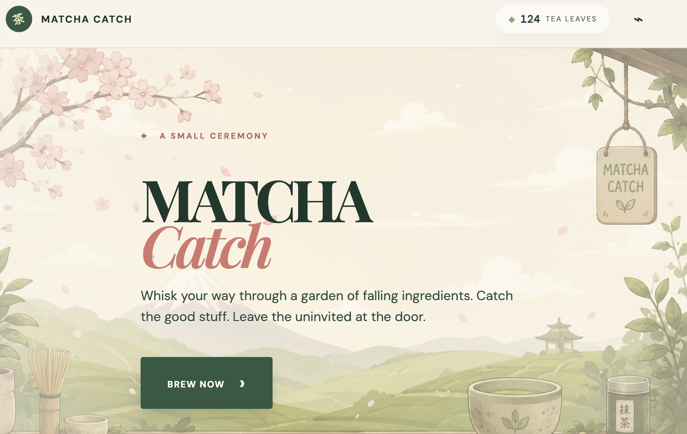

I turn regulatory complexity into products people trust — 10+ years leading discovery-to-delivery across retirement, life sciences, and compliance-driven platforms, PMP-certified and Agile at the core.
I started my career as a Senior Engineer building and training conversational AI chatbots (Microsoft LUIS, QnA Maker) for e-commerce platforms — that technical foundation is still core to how I work today. Over the next decade I moved into business analysis and product ownership, carrying that same instinct for how systems actually work into requirements, backlogs, and regulatory-heavy delivery.
At Fidelity Investments, I work across regulatory-driven eligibility features, change-impact analysis, and compliance-tracking tooling for the retirement business. Earlier, I led BA engagements spanning life sciences (Merck), CPG/tobacco regulatory submissions (BAT), and industrial IoT (Caterpillar) — partnering with legal, engineering and advisors so complexity doesn't reach the end user. I'm currently transitioning out of Fidelity and into my next Product Owner role.
Led requirements and rollout for select eligibility-determination features tied to a major U.S. retirement-plan regulatory update, partnering with legal and engineering on rule logic.
Directed current-state and future-state analysis of lab processes and enterprise LIMS at Merck Life Science, authoring BRDs, FRDs, and BPMN models supporting EU product notifications.
Supported delivery of a product compliance platform used to manage and submit tobacco product information to European regulatory authorities at British American Tobacco.
Developed and trained conversational chatbots using Microsoft LUIS and QnA Maker for e-commerce clients, then trained the wider team to build and operate them.
Notes from the field, published on Medium.
Outside the day job — where I test product ideas end to end, from prompt to shipped prototype.

A playful AI-assisted app built end to end as a solo product experiment — from problem framing and prompt design through to a working prototype.
View on GitHub"I have had a pleasure to work with Payal for almost 2 years at global project. She was always supportive and goal-oriented. Her great knowledge and can-do attitude helped us to work effectively and fluently. Working with Payal was a great experience and I can honestly recommend her to the future employer."
"I had the opportunity to work with Payal on several tasks. She brings huge experience to the project. Her deliverables were always on time. She is a smart and disciplined individual and while working with her I didn't face any dependencies from her tasks. Her knowledge on websites and digital marketing is commendable. All the best for Payal's success in her IT career."
"I worked with Payal at a global project. Our cooperation was very good. Payal is an organized person, always caring about the quality of work. I could always count on her support and knowledge. It's been a real pleasure to work with her."